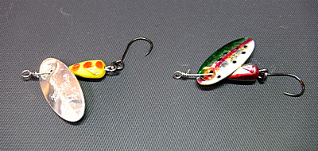

私のお気に入り
釣り道具 パンサーマーチン インラインブレード・スピナー
この夏、行きつけの釣具店の陳列棚で国内某社の、ブレードがインラインタイプになっているスピナーを見かけた。パッケージには、
○驚異の立ち上がり
○着水したその場から回り出す
○誰もが簡単、投げて巻け
というキャッチコピーが書かれていた。
『ほほぉ.....』
そんなに立ち上がりが早く回転するのか...と、さっそく二つ三つ、色違いを買い込んだ。
次の週末、いざ釣り場に着いて、さっそくそのスピナーを結び、対岸のポケットを狙って投げ入れ、リーリングを開始した。
『あれ.....？ こんなものなの？』
回転が始まるまでにやや距離が必要で、その時に感じた、「これではないな.....感」はかなり強く、パッケージやメーカーのウェブサイト、YouTube の動画などで盛んに謳われているほど立ち上がりが良くないなぁと思った。
はるかな昔、何回か使ったことがある、インラインタイプのスピナーの本家？、「パンサーマーチン」はもっと回転の立ち上がりが早かったような記憶がある。郷愁に誘われたのと、おぼろげな記憶の確認のために、本家を買うことに決めた。（笑）
昔もインラインブレードのスピナーは珍しく、パンサーマーチンも二つぐらいしか買った覚えが無い。近頃はあまり釣具店では見かけなくなったので、国内外の通販各社、アマゾンジャパン、楽天市場、Amazon.com、Cabelas、FishUSA、等で、送料を含めて価格を比較検討してみると、アメリカの Amazon.com で売っている、Panther Martin Best of the Best Kit：DEADLY 6 PACKという各色詰め合わせ６個セットが１番安そうだった。
DEADLY 6 PACK
（画像は Amazon.com より引用）
Subtotal: $19.99 * 2 packs = $39.98
Shipping & Handling: $5.64
Total before tax: $45.62
Estimated tax to be collected: $0.00
Grand Total: $45.62
その時の為替レートでは合計 $45.62 ＝ 4,958円となり、12個買ったことになるので１個あたり 413円であった。もっとも、日本国内の販売店ではもっと安く売っているところもあるが、送料がけっこう高かった。しかし、まとめて何個か買った場合の送料がどう変わるかを、その販売店に問い合わせてはみなかったので、微妙な購入価格であった。（笑）
ちなみに、上記の Amazon.com には、「トラウト根絶用キット：Trout Annihilator Kit」という凄い名前が付けられたお徳用 36個入りパック（たぶんケース付き）も売っていて、こちらなら１個あたり340円ほどになりそうだったが、さすがに36個は多すぎるのでヤメておいた。もし36個も買ってしまったら、僕の人生が根絶してしまうまでには絶対使い切れず、遺品となるだろう.....（笑）
画像は Amazon.com より引用
僕の選んだ商品は１パックに２種類のサイズが３個ずつ入っており、Amazon.com の商品ページの質問欄を見ると、それぞれ、1/16 及び 1/8 oz （約1.7g と 3.5g）の２種類だということがわかった。コメント欄にはアメリカの釣り人たちからの高い評価がたくさん載っていた。
到着を楽しみに待っていると、何とか９月中に届いた。送料が比較的安かったので、もっと時間がかかるかと思っていたが、予想よりも早く配達されたので嬉しかった。

当然ながら、フックをシングルに交換し、さっそくいつものイワナの川で使ってみた。比較のため、先に国産のインラインタイプを使った区間に入渓し、同じようなポイントで、いざ、本家を使ってみると、やはり回転の立ち上がりが速いと感じられた。ごく低速で巻いてもしっかりと回転するし、アップストリームの釣りでも充分良く回転する。ボディも程よい重さで飛距離も出る。
最もこの比較感想は、僕の「想い出バイアス」が多分にかかっており、実験として正確に計測したわけでもないので、かなり眉唾ものである。（笑）
だから本家のパンサーマーチンが国産のインラインタイプ・スピナー各種よりも良く釣れるなどとはとても断言できない。１人の釣り人の単なる思い入れでしかない。マ、気に入ったアイテムで釣りをすれば、それが自信につながり、やがては釣果に結びつくのだと願いたい。
この、パンサーマーチンスピナー６個入りのパッケージに同封されているリーフレットを見てみれば、
これがオリジナルのインライン・ソニック・スピナー
パンサーマーチンの中で最も人気があり、効果的なルアー！
トラウト、バス、クラッピー、サーモン、そして他の多くの魚種に「破壊的に効く」
これらの断トツに効果的なルアーは、文字どおり「魚を呼び寄せる」ソニック・バイブレーションを発生します。
赤色のフックは「鰓の煌めき：Gill Flash」として知られる効果を誘発し、魚たちを狂ったようにストライクへと駆り立てます。
などと、国産某社のスピナーのパッケージに勝るとも劣らぬ物々しいキャッチコピーが書き連ねられ、じっと読んでいると、『このスピナーに釣られたのは.....オレだったな。』
という思いがふつふつと心中に湧いてくるのであった。（笑） でも、裏面にはものすごい数のカラー・バリエーションが載っているので、見ているだけでも楽しい。パンサーマーチンのウェブサイトでも見ることができますので、お時間のある方はぜひどうぞ！ と、書きつつ今チラチラとサイトを眺めていると、クラッシックタイプから、タンデム（２連装）ブレード、ホログラフィック、ウィローリーフブレードタイプ、フックが毛鉤仕立てのタイプ、UV加工が施されたタイプなどなど、こんなにバリエーションがあったのか！と驚かされた。
国内各社からは、普通のブレードのスピナー、それにインラインブレードのスピナーを何種類か売っているが、テレビや雑誌、ネットなどのメディアにはあまり出てこない。おそらくは単価が安いのでメーカーも釣り具店も儲からないからだろう。売る方からすれば、400円程度のスピナーより、1,700円もするミノーの方に注力して売りたくなるのは当然だと思われる。
しかし、各種スピナーの効果は、昔も今も世界各地の様々な釣り場で様々な魚を相手に実証済みである。僕も６月に、ミノーでバラしたアマゴがスピナーをもう一度食ったことを体験した。よく飛び、よく沈み、いろいろな水深を攻めることができるスピナーは、渓流釣りにおいて、昨今の「主流」と言われている、ヘビーシンキングミノーと同じくらいに効果的なルアーだと思う。
ただ、スピナーは１投目におけるアピールは強力だが、２回以上見せるとすぐに見切られるような経験があるので、一撃必殺の剣と恐れられた薩摩の示現流のような使い方がベストであろう。そのためには、ピンポイントで遠い対岸のポケットに入れられるキャスティング技術を向上させねば.....
私のお気に入り 目次へ
サイトマップ
ホームへ
お問い合わせ